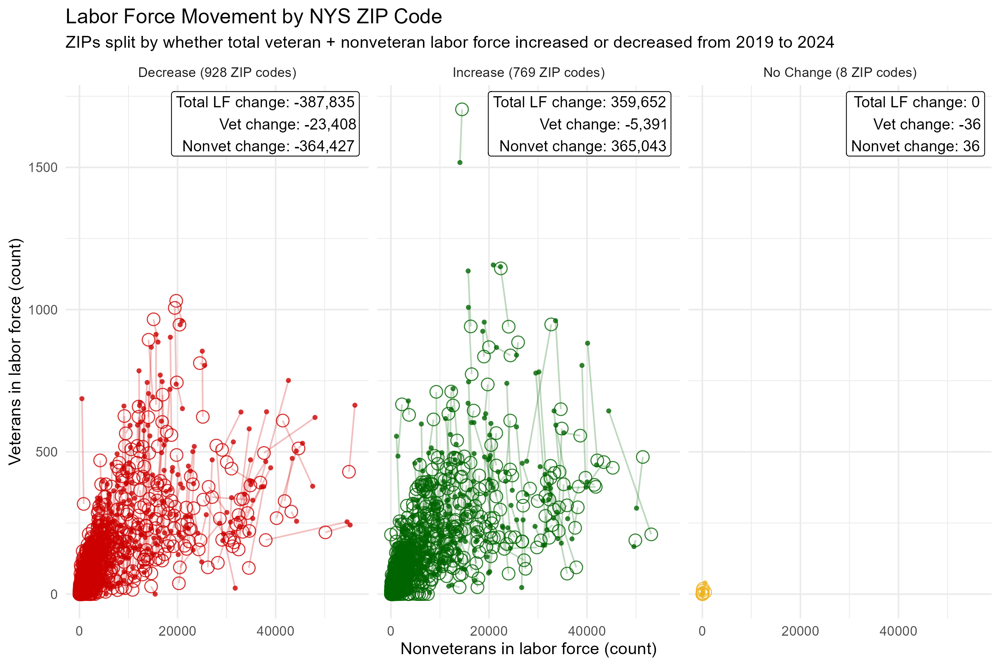

NYS Veteran Hardships by Zip Code
New York State's Declining Labor Force Is Hitting Veterans the Hardest
New York State's labor force is shrinking overall, and the ACS 5-year estimates show that the decline is falling most heavily on the veteran community. From 2019 to 2024, the total labor force decreased by 0.45% (9,358,793 to 9,316,989), while nonveterans decreased by only 0.14% (9,133,503 to 9,120,978). In contrast, the veteran labor force declined by 13.0% (225,290 to 196,011), highlighting a much sharper drop for veterans than for the state overall.

Data: U.S. Census Bureau ACS 5-year estimates (2019 & 2024). Cleaned and summarized in RStudio. | Download: PDF
This reduction in the veteran labor force is strikingly widespread. When ZIP codes are grouped by whether the total labor force (veteran + nonveteran) grew, declined, or stayed stable from 2019 to 2024, the net result in every group is still a loss of veterans in the labor force. In other words, even in communities where overall workforce participation increased, veterans did not share equally in that growth suggesting that the veteran decline is not simply a reflection of local economic conditions, but a broader pattern affecting veterans across New York State.

Data: U.S. Census Bureau ACS 5-year estimates (2019 & 2024). Cleaned and summarized in RStudio. | Download: PDF
The chart below is a ZIP code listing for New York State, showing detailed labor-force counts for veterans and nonveterans in 2019 and 2024. It's intentionally granular so you can see what's happening in individual communities—not just statewide averages. TTake a moment to scroll through and look up your ZIP code to see how your community compares with statewide patterns.
Data: U.S. Census Bureau ACS 5-year estimates (2019 & 2024). Cleaned and summarized in RStudio. | Download: PDF